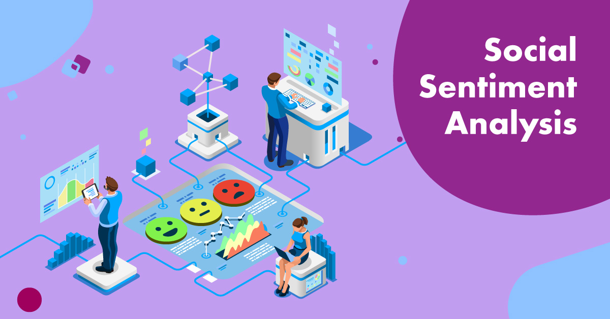

Our Company, XYZ Partners Limited seek to enter the Indian Market. As Data Analysts, we carefully explore funding for startups in India. We ask business questions, use the the available data to answer the questions and present recommendations.

As a Data Analyst, I finetune a pre-trained machine learning model to assess if a Twitter post related to vaccinations is positive, neutral, or negative.This solution could help governments and other public health actors monitor public sentiment towards COVID-19 vaccinations and help improve public health policy, vaccine communication strategies, and vaccination programs across the world.
As a Data Analyst for Corporacion Favorita, a large Ecuadorian-based grocery retailer, I perform a times-series analysis on sales from all outlets. Also, I build a model that more accurately predicts the unit sales for thousands of items sold at different Favorita stores.

In my role as the Senior Business Analyst of GMC Telecommunications, an imaginary telecommunications company, I was informed that customer retention has got to a record low. My job is to discover what the key contributors are for customers dropping the company's products and services. Again, I am tasked to build a model that predicts the likelihood of a customer churning.

As a Senior Data Scientist for GMC Consulting Partners, I make business use of my machine learning models by deploying them into interactive Graphic User Interfaces. I deploy my regression model with a Streamlit App and classification model with a Gradio App. This will allow clients to put my models to productive use for strategic decision making.
Sepsis, a life-threatening condition arising from infection, poses a significant global healthcare challenge. By harnessing advanced data analytics techniques and exploring diverse parameters such as vital signs, medical history, and demographic information, I aim to identify early warning signs and risk factors for sepsis development. The focus lies on using the FastAPI and Docker frameworks to create a robust and user-friendly web interface for healthcare professionals to accurately detect and classify sepsis cases and respond effectively to this life-threatening condition